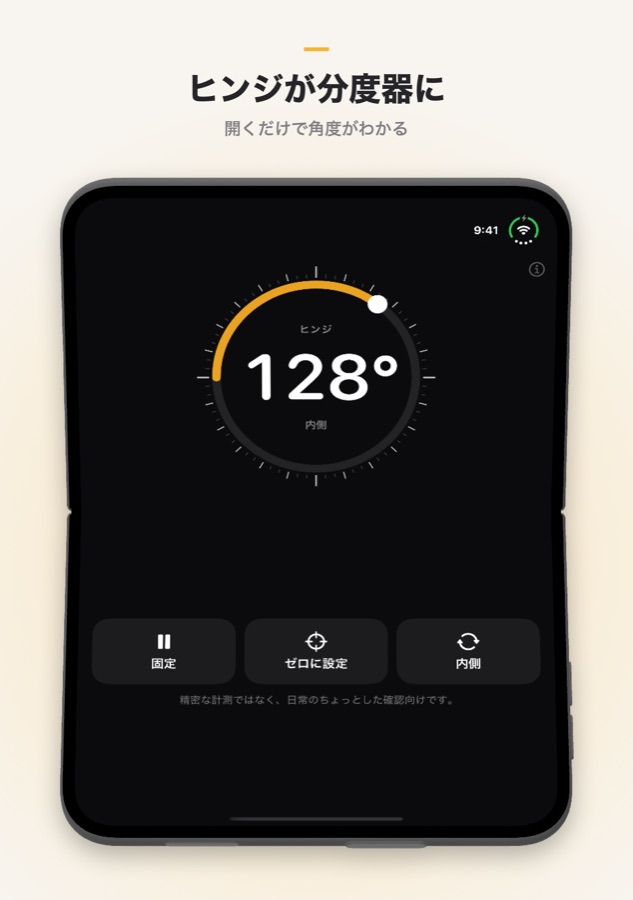
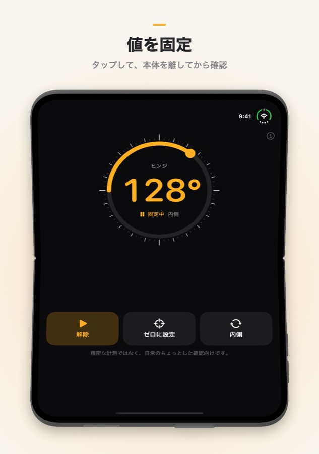
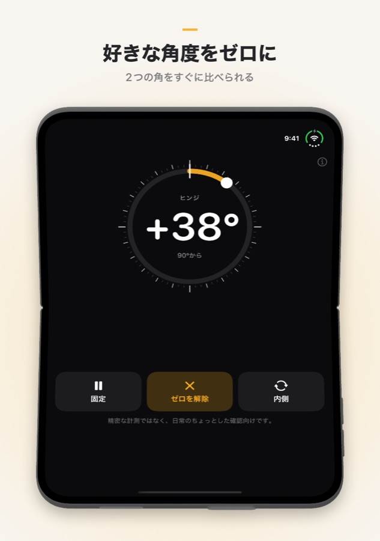

Fold Angle
折りたたみiPhoneは、自分がどれだけ開いているかをすでに知っています。Fold Angleは、そのヒンジを分度器に変えます。部屋の角、扉、箱のふちに当てるだけで、2つの画面の間の角度がわかります。その他のiPhoneやiPadでは傾斜計として使えます。
iOS 17以降が必要です。
ダウンロード


サポート
ご質問や不具合のご報告は、メールでご連絡ください。
よくある質問
- どの機種で使えますか？
Fold AngleはiPhone Duo向けに設計されており、ヒンジの角度を直接読み取ります。その他のiPhoneやiPadでは、モーションセンサーを使って水平からの傾きを表示する傾斜計として使えます。 - 測った値を残すには？
固定をタップすると数値が止まるので、本体を離してから確認できます。解除をタップするとリアルタイム表示に戻ります。数値をダブルタップしても同じです。 - 「ゼロに設定」とは？
今の角度を新しいゼロにします。2つの角を比べたり、扉の開き具合を測ったりするときに便利です。ゼロを解除で元の角度表示に戻ります。 - 「内側」と「外側」の違いは？
内側は2つの画面の間の角度、外側は折り目の背面側の角度（360°から内側を引いた値）です。ボタンで切り替えられます。 - 平らな場所に置いても0°ではなく2°ほどになります。
傾斜計モードでは、カメラの出っ張りで本体の片側が少し浮きます。先に平らな面でゼロに設定をタップしてから測るか、画面を下にして置いてください。 - 振動を感じません。
Fold Angleは15°ごとに軽く、90°ちょうどでしっかり振動します。何も感じない場合は、設定 → サウンドと触覚 → システムの触覚 がオンになっているか確認してください。 - どのくらい正確ですか？
日常のちょっとした確認向けで、精密な計測には向いていません。正確さが必要な場面では、分度器や水平器で確かめてください。 - データは収集されますか？
いいえ。Fold Angleにはアカウントもサーバーもなく、通信も行いません。センサーの値は端末の中だけで使われます。
スクリーンショット



法的情報
プライバシーポリシー
最終更新日： 2026年10月
はじめに
Fold Angleは「あなたのデータはあなたのもの」という考えで作られています。このプライバシーポリシーでは、Appがアクセスする情報とその扱いについて説明します。要するに、私たちは何も受け取りません。
センサー
Fold Angleは、ヒンジの角度（iPhone Duo）とモーションセンサー（その他の機種）を、画面に角度を表示するためだけに読み取ります。これらの値は端末内で処理され、保存、送信、共有されることはありません。
データを収集しません
個人情報を収集、保存、追跡、処理することはありません。アカウントや登録も不要です。
インターネット接続は不要
Fold Angleは完全にオフラインで動作し、通信を一切行いません。
購入について
購入はすべてApp Storeを通じてAppleが処理します。Apple IDや支払い方法などの情報を私たちが受け取ることはありません。
サードパーティサービス
Fold Angleは、第三者の分析、広告、トラッキングサービスを使用していません。データが第三者と共有されることはありません。
子どものプライバシー
個人データを収集しないため、Fold Angleは児童オンラインプライバシー保護法（COPPA）や世界各国の同様の規制に準拠しています。
ポリシーの変更
このプライバシーポリシーは随時更新されることがあります。変更は掲載した時点で有効になります。定期的にご確認ください。
お問い合わせ
このプライバシーポリシーについてのご質問は、こちらまでご連絡ください：support [at] hoshinosoftware [dot] com
利用規約
最終更新日： 2026年10月
規約への同意
Fold Angleをダウンロードまたは使用することで、本利用規約に同意したものとみなされます。同意いただけない場合は、Appを使用しないでください。
ライセンス
Hoshino Softwareは、本規約およびAppleのApp Store利用規約に従い、お使いのApple製品でFold Angleを使用するための、個人的で譲渡不可、非独占的なライセンスを付与します。
許可された使用
Fold Angleは合法的な目的にのみ使用できます。適用される法令に違反する方法でAppを使用しないことに同意するものとします。
精密な計測器ではありません
Fold Angleは日常のちょっとした確認のためのAppです。値は端末のセンサーに左右され、1°以上ずれることがあります。誤差が危険や損害、損失につながる場面では頼らないでください。
無保証
Fold Angleは「現状のまま」提供され、明示または黙示を問わず、いかなる保証もありません。Appに誤りがないこと、中断しないこと、特定の目的に適することは保証しません。
責任の制限
適用法で認められる最大限の範囲で、Hoshino Softwareは、Fold Angleの使用または使用できないことから生じる直接的、間接的、付随的、特別、または結果的な損害について責任を負いません。
規約の変更
本利用規約は随時更新されることがあります。変更の掲載後もAppを使い続けた場合、改訂後の規約に同意したものとみなされます。
準拠法
本規約は、Hoshino Softwareが事業を行う法域の法律に準拠します。
お問い合わせ
本利用規約についてのご質問は、こちらまでご連絡ください：support [at] hoshinosoftware [dot] com